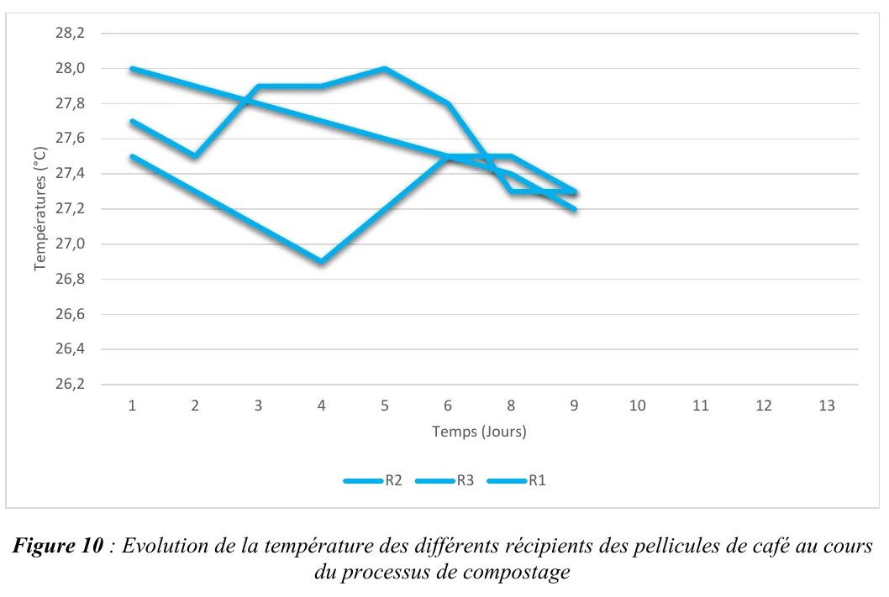
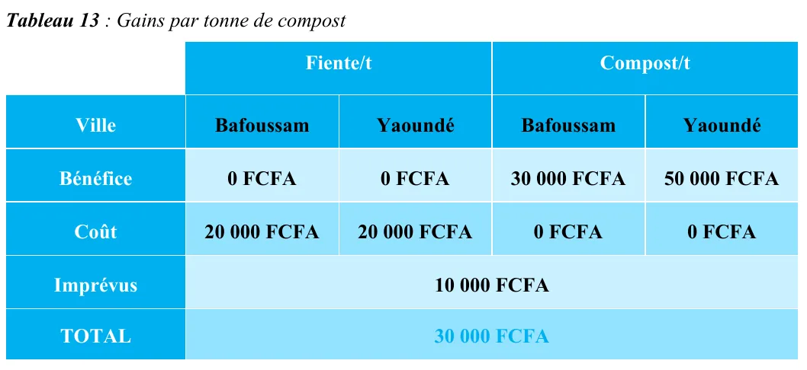

Opérations · Données · Rapport de stage
Compostage : valoriser les déchets d'une torréfaction de café
Comment un flux de déchets que personne n'avait mesuré est devenu une marge de 30 000 FCFA par tonne
Le point de départ
Une torréfaction de café produit des pellicules, séparées des grains au grillage, et des copeaux de bois. L'entreprise jetait les deux, sans même connaître le volume.
J'ai chiffré ce flux non valorisé à 2 794 kg par an, un chiffre que personne n'avait jamais calculé dans l'entreprise.
L'essai
Un vrai test de compostage au laboratoire de microbiologie de l'Institut : six récipients, trois de pellicules de café (R1 à R3) et trois de déchets de bois (R4 à R6), suivis treize jours par des relevés quotidiens de température, puis un test de pH. Résultats comparés à un compost de référence produit en Côte d'Ivoire.

(ouvre le fichier dans un nouvel onglet)L'étude économique
Un essai de laboratoire ne convainc personne s'il ne finit pas sur un chiffre que la direction comprend. J'ai comparé la valeur du compost à celle de la fiente de volaille, un engrais concurrent déjà vendu au Cameroun, avec les prix relevés à Yaoundé et Bafoussam.

(ouvre le fichier dans un nouvel onglet)Résultat : un procédé artisanal proposé à l'entreprise dégagerait 30 000 FCFA de marge par tonne d'engrais vendue.
Ce que j'en retiens pour piloter des opérations
Mesurer ce que personne ne mesure, prouver par un essai, puis traduire en valeur pour l'entreprise : c'est mon premier travail où une solution technique va jusqu'à une décision chiffrée. Un diagnostic qui reste théorique ne change rien.